Exams 30%
Two non-cumulative, closed-book exams mixing multiple choice, short answer, and essay questions.
Carnegie Mellon University in Qatar · 2012 to 2016 · Undergraduate
Motivation, teams, decisions, negotiation, leadership, and change, taught through Harvard cases and simulations.
About 70 to 90 students a year in Doha across two sections, and 56 in Pittsburgh in Fall 2016
This was the core organizational behavior course for business students, and the course I taught most: first in Pittsburgh as a PhD student, then every year in Doha, and again in Pittsburgh in 2016. I built it around cases and simulations: Lincoln Electric and SAS for motivation, an Everest simulation and the Carter Racing exercise for team decisions, live negotiations, and a change simulation at the end. Each year I replaced more lecture time with exercises, so students spent most of class applying a concept rather than hearing about it. Students finished by analyzing a real company of their choosing with the course's frameworks.
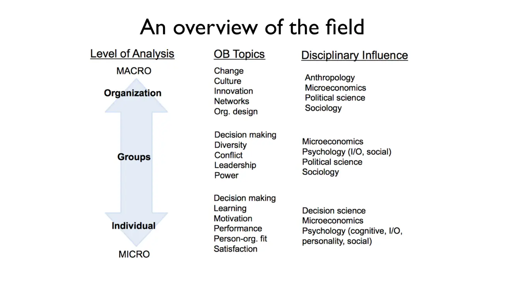
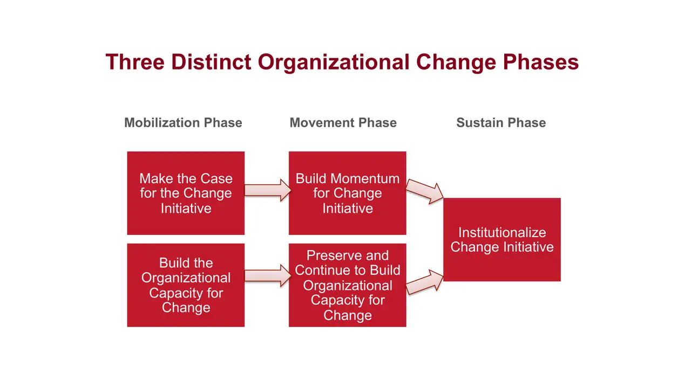
slides from the decks
I taught from
Fall 2014 · Mondays and Wednesdays, two sections (10:30 and 1:30)
Scroll the schedule and the slides follow along: five from each session, picked from the decks I taught from.

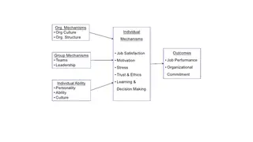
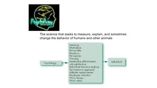
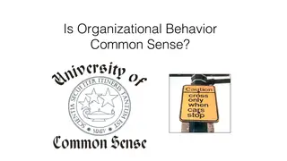
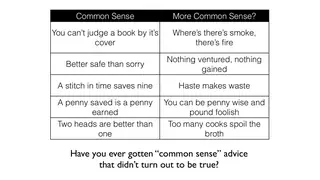
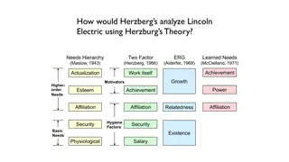

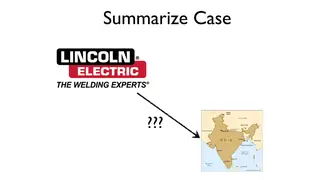
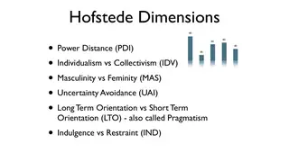
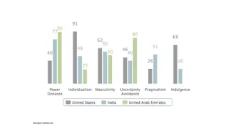
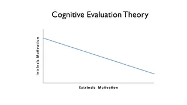
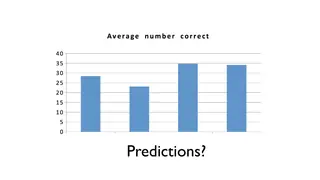

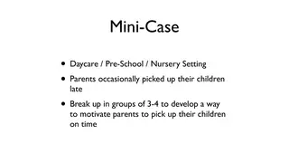
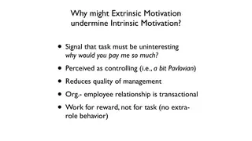
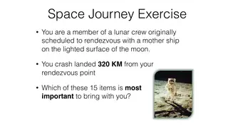
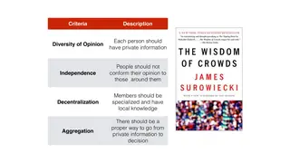
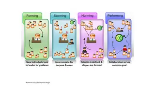

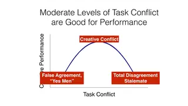


What students hand in
Two non-cumulative, closed-book exams mixing multiple choice, short answer, and essay questions.
Seven open-book online quizzes on the previous one to two weeks of lectures, readings, and cases.
Four papers written in randomly assigned groups. Assignment 1 analyzed the SAS Institute case. Assignment 2 analyzed the team's own Everest simulation run alongside the 1996 Everest case. Assignment 3 had groups carry out two negotiations outside class, a movie production deal and a hotel coffee contract, and report their planning, BATNAs, and outcomes. Assignment 4 compared Bill Gates, Steve Jobs, and a leader of the group's choice using Kotter, Goleman's six styles, and StrengthsFinder.
In self-selected groups of three to five, students analyzed a real organization using three course topics, backed by at least six sources, and recommended improvements. Each group wrote an 8 to 10 page paper and gave a five-minute presentation. Companies from earlier course cases or earlier years were off limits.
Discussion, in-class exercises, and iClicker questions, with some cold calling so quieter students had an equal chance to contribute. Peer evaluations after every group assignment fed into this grade.
What students built
Every project, by term.
In their words
4.50 out of 5 average teaching rating · 8 sections · 266 student responses · all evaluations
Professor Collier is a great professor! His main goal is students learning the principles and applying them in real life.
Professor Collier organizes the course in such a way that the large amount of work seems less and interesting. His teaching method is very student friendly.
I thought this class would be a burden, but it was the opposite, the things we learn about in this class are very useful for our future.
One of the best courses this semester; loved the way it was structured and thoroughly enjoyed the content, especially the simulations!
Offerings